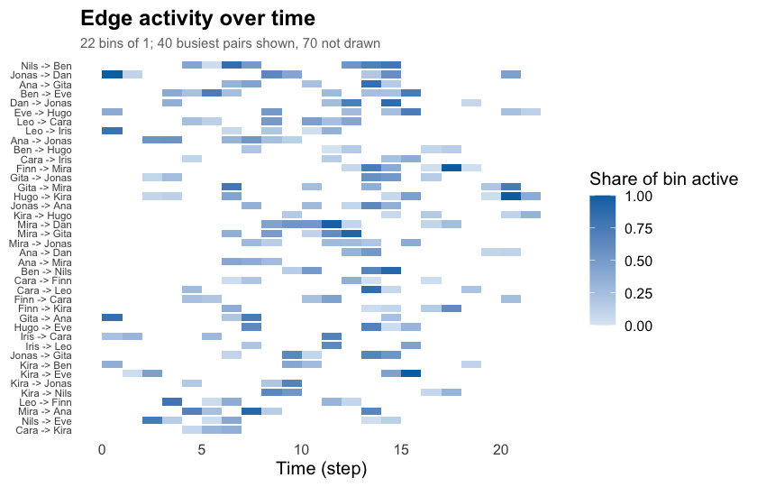

The Dynet R package provides functions for constructing, measuring and visualising temporal networks, that is, networks whose ties are located in time. A network is built with one constructor from any of four kinds of relational log: interval logs with a start and an end per tie, contact logs of instantaneous events, threaded logs such as forum or chat data, and co-presence logs where actors sharing a group become connected. Measurement covers time-varying centrality, graph-level structure, tie formation and dissolution, tie duration, burstiness, group mixing, time-respecting paths, reachability and temporal centrality. Every function returns a data frame with one row per observation, addressed by vertex name, so results are read, plotted and modelled without further manipulation. The implementation is base R; the values are checked against the igraph, sna and tsna packages in the test suite. Drawing is delegated to cograph, of which every Dynet network is an instance.
Temporal networks
A social network is usually recorded as a set of ties between actors, and the ties are then analysed as if they had all existed at once. Most relational data are not like that. Conversations, messages, meetings and collaborations happen at particular moments and last for particular lengths of time. A temporal network keeps this information: each tie is a spell, a pair of actors together with the time at which the tie began and the time at which it ended, or a single instant when the tie has no duration (Holme and Saramäki, 2012). The same pair of actors may have many spells.
Aggregating the spells into one static network loses two things. The first is duration and intensity: a pair that spoke once for a minute and a pair that worked together every day become the same edge. The second, and more consequential, is order. In a static network, a tie from A to B and a tie from B to C imply a path from A to C. In a temporal network they imply a path only if the tie from B to C is still active at, or begins after, the moment the tie from A to B delivered something to B. A path that respects this constraint is called a time-respecting path (Kempe, Kleinberg and Kumar, 2002). Because the constraint is one-directional, temporal reachability is not symmetric even in an undirected network, and a static network systematically overstates how many actors can reach one another (Moody, 2002). Measures built on time-respecting paths, such as temporal closeness and temporal betweenness, describe the network as a medium through which something can travel (Pan and Saramäki, 2011; Nicosia et al., 2013). Measures built on the timing of a single actor’s events, such as burstiness and memory, describe the rhythm of activity itself (Goh and Barabási, 2008).
Measures of a temporal network are computed in one of two ways. Density, reciprocity, transitivity, centrality and the counts of ties formed and dissolved are computed within windows of time: the observation period is divided into windows, which may tile it or overlap, each window is measured as a static network, and the result is a time series whose resolution is set by the width of the window. Reachability, latency, temporal closeness and temporal betweenness are computed on the spells directly, along time-respecting paths, and have no static counterpart: they report the earliest time at which one actor can reach another, how many distinct routes achieve it, and how much of the network is reachable from a given moment. In educational research these methods have been used to study how collaboration unfolds within a course and which students act as bridges over time (Saqr and Nouri, 2020; Saqr, 2024).
Relational logs arrive in different shapes, and the shape determines how spells are defined. An interval log records a start and an end for every row. A contact log records only a timestamp, so every spell is a point. A threaded log, typical of discussion forums, records a timestamp and the thread a message belongs to; following Saqr and Nouri (2020), a message is taken to be active from the moment it is posted until the thread falls silent, so a message that provoked a long discussion stays live longer than one that did not. A co-presence log records which actors attended which occasion; every pair of attendees is connected for the span of the occasion. Dynet reads all four with one function and infers the shape from the arguments given to it.
Installation
Dynet is not on CRAN. The development version is installed from the author’s R-universe repository, which also resolves its cograph dependency, or from GitHub. These commands are not evaluated when this page is rendered.
install.packages("Dynet",
repos = c("https://mohsaqr.r-universe.dev",
"https://cloud.r-project.org"))
# or from GitHub
remotes::install_github("mohsaqr/Dynet")Data
Four bundled logs are used below. school_contacts is a simulated interval log of 240 face-to-face contacts among fourteen named students, with time in arbitrary units over about 21.5 units. forum_posts is a simulated threaded log of 241 posts by twenty participants over eight weeks, with a companion table forum_people that gives each participant a role. seminar_attendance is a simulated co-presence log of which students attended which weekly seminar. The package also ships mooc_posts, the 2,529 posts of a real MOOC discussion forum analysed in Saqr (2024), and thought_chains, the reply table of the Trees of Thought study.
library(Dynet)
head(school_contacts)
#> from to start end
#> 1 Jonas Dan 0.00 1.10
#> 2 Gita Ana 0.14 0.98
#> 3 Leo Mira 0.15 0.42
#> 4 Leo Iris 0.15 0.96
#> 5 Kira Ben 0.33 0.69
#> 6 Leo Iris 0.38 0.50Each row is one contact from one student to another, with the time it began and the time it ended.
Building a network
To build a temporal network from an interval log, we call dynet() with the log. The columns from, to, start and end are recognised by name; sender and receiver, source and target, onset and terminus, and several other spellings are accepted as well, and times may be numeric, dates or date-times. Printing the network describes its format and shows the first spells.
dn <- dynet(school_contacts)
dn
#> # Temporal network (interval format, directed) | a cograph netobject
#> # 14 vertices | 240 edge spells | 110 distinct pairs
#> # observed from 0 to 21.52 step, binned every 1
#>
#> from to start end duration weight
#> Jonas Dan 0.00 1.10 1.10 1
#> Gita Ana 0.14 0.98 0.84 1
#> Leo Mira 0.15 0.42 0.27 1
#> Leo Iris 0.15 0.96 0.81 1
#> Kira Ben 0.33 0.69 0.36 1
#> Leo Iris 0.38 0.50 0.12 1
#> # 234 more spells. summary() describes the network; plot() draws it.To see the network’s dimensions in one table, we call summary(). The mean snapshot density is the average over one-unit bins of the share of pairs that are connected in the bin.
summary(dn)
#> property value
#> 1 format interval
#> 2 directed yes
#> 3 vertices 14
#> 4 edge spells 240
#> 5 distinct pairs 110
#> 6 time unit step
#> 7 observed from 0
#> 8 observed to 21.52
#> 9 span 21.52
#> 10 bin width 1
#> 11 time bins 22
#> 12 mean snapshot density 0.0829
#> 13 temporal density not computed
#> 14 sessions none
#> 15 vertex attributes noneThe other three log shapes are built with the same function. For a contact log, we name the timestamp column in time. For a threaded log, we name the thread column in thread, and pass the participant table to nodes so that its attributes travel with the network. For a co-presence log, we name the actor column in actor and the occasion column in group.
contacts <- dynet(forum_posts, time = "timestamp")
forum <- dynet(forum_posts, thread = "thread", nodes = forum_people)
seminars <- dynet(seminar_attendance, actor = "student", group = "seminar")
forum
#> # Temporal network (threaded format, directed) | a cograph netobject
#> # 20 vertices | 241 edge spells | 172 distinct pairs
#> # observed from 0 to 54.96387 days, binned every 1
#> # vertex attributes: role, achievement
#>
#> from to start end duration weight thread
#> student_14 student_05 0.0000000 2.296969 2.296969 1 thread_47
#> student_10 student_05 0.7257216 2.296969 1.571247 1 thread_47
#> teacher_A student_09 0.8559934 3.235993 2.380000 1 thread_11
#> student_04 student_05 1.1715344 2.296969 1.125435 1 thread_47
#> student_02 student_09 1.2382611 3.235993 1.997732 1 thread_11
#> student_06 teacher_A 1.9797595 3.235993 1.256234 1 thread_11
#> # 235 more spells. summary() describes the network; plot() draws it.The threaded network reports its time in days, because the log carried date-times; the unit is chosen to suit the span and is stated in every result.
To draw the spells over time, we call plot() on the network. Each horizontal segment is one spell.
plot(dn)
Measuring in windows
Every measuring function that returns a time series takes the same four arguments. start and end bound the period, step is the interval between measurements, and window is the length of time each measurement covers. When window equals step, the windows tile the period; when window is larger, they overlap and the series is a rolling one; when window is zero, the network is sampled at each instant. The defaults tile the observed period into unit bins.
To obtain a graph-level measure in each window, we call metrics() with the network and measure for the statistic. Here density is measured every unit over a rolling window of seven units.
density <- metrics(dn, measure = "density", step = 1, window = 7)
density
#> # Density (graph-level)
#> # 22 time points, step 1, window 7 (rolling) | time in step
#> time measure value
#> 0 density 0.3241758
#> 1 density 0.3461538
#> 2 density 0.3571429
#> 3 density 0.3791209
#> 4 density 0.3681319
#> 5 density 0.3791209
#> 6 density 0.3791209
#> 7 density 0.3791209
#> 8 density 0.3956044
#> 9 density 0.3736264
#> 10 density 0.3626374
#> 11 density 0.3351648
#> # 10 more rows. summary() aggregates them; plot() draws them.To summarise a series, we call summary() on it. The table reports one row per measure with its mean, spread, range and the time at which it peaked.
summary(density)
#> measure n mean sd min max peak_time
#> 1 density 22 0.285964 0.111584 0.03296703 0.3956044 8To draw the series, we call plot() on it.
plot(density)
Several measures may be requested in one call; they arrive stacked in one data frame with a measure column. The graph-level catalogue includes density, reciprocity, transitivity, the dyad and triad censuses, component counts, centralisation and the Krackhardt indices, and is listed in ?metrics.
Vertex measures
To obtain a centrality for every vertex in every window, we call dyn_centrality() with the network and measure for the index. The result has one row per vertex per time point.
degree <- dyn_centrality(dn, measure = "degree")
degree
#> # Degree (node-level)
#> # 14 vertices | 22 time points, 1 per bin | time in step
#> time node measure value
#> 0 Ana degree 1
#> 0 Ben degree 1
#> 0 Cara degree 1
#> 0 Dan degree 1
#> 0 Eve degree 2
#> 0 Finn degree 1
#> 0 Gita degree 1
#> 0 Hugo degree 1
#> 0 Iris degree 2
#> 0 Jonas degree 2
#> 0 Kira degree 2
#> 0 Leo degree 2
#> # 296 more rows. summary() aggregates them; plot() draws them.To reduce the series to one row per vertex, we call summary() on it. The peak_time column gives the time at which each vertex was most central.
summary(degree)
#> node measure n mean sd min max peak_time
#> 1 Ana degree 22 2.181818 2.015095 0 7 6
#> 2 Ben degree 22 2.000000 1.234427 0 4 4
#> 3 Cara degree 22 2.227273 1.342770 0 5 4
#> 4 Dan degree 22 2.090909 1.444500 1 5 13
#> 5 Eve degree 22 2.272727 2.051290 0 8 14
#> 6 Finn degree 22 2.000000 1.661898 0 6 12
#> 7 Gita degree 22 1.727273 1.777688 0 7 6
#> 8 Hugo degree 22 2.318182 1.861550 0 6 6
#> 9 Iris degree 22 1.772727 1.066004 0 4 11
#> 10 Jonas degree 22 2.863636 2.076982 0 7 13
#> 11 Kira degree 22 2.636364 1.255292 1 6 6
#> 12 Leo degree 22 1.636364 1.432462 0 5 6
#> 13 Mira degree 22 2.272727 1.695423 0 6 13
#> 14 Nils degree 22 2.181818 2.174229 0 7 14The measures above are computed on the network as it stands in each window. To compute a centrality on time-respecting paths across the whole period instead, we set scope to "temporal". Temporal closeness is the inverse of the mean time a vertex needs to reach the others; it has one value per vertex, not one per window.
closeness <- dyn_centrality(dn, measure = "closeness", scope = "temporal")
closeness
#> # Closeness (node-level)
#> # 14 vertices | time in step
#> # computed on time-respecting paths across the whole window
#> node measure value
#> Ana closeness 0.1313662
#> Ben closeness 0.1815896
#> Cara closeness 0.1931075
#> Dan closeness 0.2230994
#> Eve closeness 0.2616221
#> Finn closeness 0.1644945
#> Gita closeness 0.1404950
#> Hugo closeness 0.1878341
#> Iris closeness 0.2398082
#> Jonas closeness 0.3674392
#> Kira closeness 0.2107994
#> Leo closeness 0.3747478
#> # 2 more rows. summary() aggregates them; plot() draws them.On a directed network, mode selects whether incoming, outgoing or all ties are counted. The vertex-level catalogue includes degree, strength, closeness, betweenness, eigenvector centrality, PageRank, hub and authority scores, coreness, Burt’s constraint and several prestige indices, and is listed in ?dyn_centrality.
Time-respecting paths
To find the earliest time-respecting path from one vertex to every other, we call paths() with the network and from for the source. The result has one row per vertex. arrival_time is the earliest moment the vertex can be reached, latency is that moment minus the time the source started, n_hops is the number of ties the earliest route uses, and n_paths is the number of distinct routes that arrive equally early.
from_ana <- paths(dn, from = "Ana")
from_ana
#> # Time-respecting paths from 'Ana', from t = 0
#> # reaches 13 of 13 other vertices | time in step
#> node reachable arrival_time attained latency n_hops n_paths
#> Ana TRUE 0.00 TRUE 0.00 0 1
#> Ben TRUE 9.59 TRUE 9.59 3 3
#> Cara TRUE 6.67 TRUE 6.67 1 1
#> Dan TRUE 7.98 TRUE 7.98 4 1
#> Eve TRUE 11.66 TRUE 11.66 4 3
#> Finn TRUE 6.96 TRUE 6.96 2 1
#> Gita TRUE 6.36 TRUE 6.36 2 1
#> Hugo TRUE 7.98 TRUE 7.98 3 1
#> Iris TRUE 10.00 TRUE 10.00 3 1
#> Jonas TRUE 2.12 TRUE 2.12 1 1
#> Kira TRUE 6.12 TRUE 6.12 2 2
#> Leo TRUE 9.65 TRUE 9.65 3 1
#> # 2 more rows. summary() aggregates them; plot() draws the tree.To summarise the reachable set, we call summary() on the result.
summary(from_ana)
#> property value
#> 1 source Ana
#> 2 direction forward
#> 3 reachable 13
#> 4 reachable share 1
#> 5 median latency 7.51
#> 6 max latency 11.66
#> 7 median hops 2
#> 8 max hops 4Ana reaches every other student within four hops. Three of them, Ben, Eve and Finn, never meet her directly and are joined to her only through intermediaries whose contacts happened in the right order. The same question asked from a later starting point has a different answer, because the contacts that carried the earlier routes have already passed. To start the search later, we set start.
from_ana_late <- paths(dn, from = "Ana", start = 18)
summary(from_ana_late)
#> property value
#> 1 source Ana
#> 2 direction forward
#> 3 reachable 5
#> 4 reachable share 0.385
#> 5 median latency 2.43
#> 6 max latency 2.68
#> 7 median hops 2
#> 8 max hops 3To list the routes themselves, we call pathways() with the network and from for the source. Each row is one distinct sequence of vertices, with the number of earliest routes that follow it.
pathways(dn, from = "Ana")
#> # Time-respecting pathways (5 distinct routes)
#> # 7 optimal routes counted
#> route endpoint count share n_hops
#> Ana -> Jonas -> Kira -> Ben -> Eve Eve 3 0.4285714 4
#> Ana -> Mira -> Gita Gita 1 0.1428571 2
#> Ana -> Cara -> Finn -> Iris Iris 1 0.1428571 3
#> Ana -> Cara -> Finn -> Leo Leo 1 0.1428571 3
#> Ana -> Cara -> Nils -> Hugo -> Dan Dan 1 0.1428571 4
#> arrival_time
#> 11.66
#> 6.36
#> 10.00
#> 9.65
#> 7.98To draw the routes as a tree, we call plot() on the paths result. A vertex appears more than once when it is entered at different times, because each entry time leaves a different set of onward contacts available.
plot(from_ana)
To obtain the share of the network each vertex can reach, or be reached from, we call dyn_reachability() with the network; direction selects forward, backward or both.
Tie dynamics and timing
To count the ties that form and dissolve in each window, we call events() with the network. The default measures are formation and dissolution.
turnover <- events(dn)
summary(turnover)
#> measure n mean sd min max peak_time
#> 1 dissolution 22 10.90909 6.132731 3 27 14
#> 2 formation 22 10.90909 6.689787 0 29 13To measure how long ties last, we call durations() with the network and measure for the statistic. With measure = "mean" the result is the mean spell length of each pair; unit moves the question from pairs to individual spells or to vertex activity.
lengths <- durations(dn, measure = "mean")
lengths
#> # Relationship duration (edge-level)
#> # time in step
#> # durations in step
#> from to measure value
#> Ana Cara mean 0.1000000
#> Ana Dan mean 0.3400000
#> Ana Gita mean 0.4220000
#> Ana Iris mean 0.5000000
#> Ana Jonas mean 0.5850000
#> Ana Kira mean 0.1100000
#> Ana Leo mean 1.1900000
#> Ana Mira mean 0.3466667
#> Ben Eve mean 0.6100000
#> Ben Finn mean 0.2300000
#> Ben Gita mean 0.3400000
#> Ben Hugo mean 0.1475000
#> # 98 more rows. summary() aggregates them; plot() draws them.To measure whether a vertex’s contacts are regular or clustered in time, we call burstiness() with the network. Burstiness compares the dispersion of the gaps between a vertex’s events with the exponential reference: 1 is the bursty limit, 0 the Poisson reference and -1 perfectly regular activity. Memory is the correlation between consecutive gaps.
rhythm <- burstiness(dn)
summary(rhythm)
#> node measure n mean sd min max
#> 1 Ana burstiness 1 0.24575324 NA 0.24575324 0.24575324
#> 2 Ana events 1 36.00000000 NA 36.00000000 36.00000000
#> 3 Ana memory 1 -0.03128243 NA -0.03128243 -0.03128243
#> 4 Ben burstiness 1 0.03288611 NA 0.03288611 0.03288611
#> 5 Ben events 1 34.00000000 NA 34.00000000 34.00000000
#> 6 Ben memory 1 -0.19926343 NA -0.19926343 -0.19926343
#> 7 Cara burstiness 1 -0.05610924 NA -0.05610924 -0.05610924
#> 8 Cara events 1 35.00000000 NA 35.00000000 35.00000000
#> 9 Cara memory 1 0.07458054 NA 0.07458054 0.07458054
#> 10 Dan burstiness 1 -0.05061772 NA -0.05061772 -0.05061772
#> 11 Dan events 1 35.00000000 NA 35.00000000 35.00000000
#> 12 Dan memory 1 0.21654310 NA 0.21654310 0.21654310
#> 13 Eve burstiness 1 0.09217906 NA 0.09217906 0.09217906
#> 14 Eve events 1 34.00000000 NA 34.00000000 34.00000000
#> 15 Eve memory 1 0.25882509 NA 0.25882509 0.25882509
#> 16 Finn burstiness 1 0.02938507 NA 0.02938507 0.02938507
#> 17 Finn events 1 29.00000000 NA 29.00000000 29.00000000
#> 18 Finn memory 1 -0.22653754 NA -0.22653754 -0.22653754
#> 19 Gita burstiness 1 0.06104200 NA 0.06104200 0.06104200
#> 20 Gita events 1 31.00000000 NA 31.00000000 31.00000000
#> 21 Gita memory 1 0.21165690 NA 0.21165690 0.21165690
#> 22 Hugo burstiness 1 0.09885443 NA 0.09885443 0.09885443
#> 23 Hugo events 1 34.00000000 NA 34.00000000 34.00000000
#> 24 Hugo memory 1 0.11283700 NA 0.11283700 0.11283700
#> 25 Iris burstiness 1 -0.05968068 NA -0.05968068 -0.05968068
#> 26 Iris events 1 30.00000000 NA 30.00000000 30.00000000
#> 27 Iris memory 1 -0.09356972 NA -0.09356972 -0.09356972
#> 28 Jonas burstiness 1 -0.02750549 NA -0.02750549 -0.02750549
#> 29 Jonas events 1 46.00000000 NA 46.00000000 46.00000000
#> 30 Jonas memory 1 0.23391957 NA 0.23391957 0.23391957
#> 31 Kira burstiness 1 -0.07048265 NA -0.07048265 -0.07048265
#> 32 Kira events 1 38.00000000 NA 38.00000000 38.00000000
#> 33 Kira memory 1 -0.14972726 NA -0.14972726 -0.14972726
#> 34 Leo burstiness 1 -0.01020265 NA -0.01020265 -0.01020265
#> 35 Leo events 1 28.00000000 NA 28.00000000 28.00000000
#> 36 Leo memory 1 0.48001912 NA 0.48001912 0.48001912
#> 37 Mira burstiness 1 0.09968547 NA 0.09968547 0.09968547
#> 38 Mira events 1 36.00000000 NA 36.00000000 36.00000000
#> 39 Mira memory 1 0.18691159 NA 0.18691159 0.18691159
#> 40 Nils burstiness 1 0.08408761 NA 0.08408761 0.08408761
#> 41 Nils events 1 34.00000000 NA 34.00000000 34.00000000
#> 42 Nils memory 1 0.22784733 NA 0.22784733 0.22784733Mixing between groups
To count ties within and between groups of vertices, we call mixing() with the network and attribute for the vertex attribute that defines the groups. The forum network carries a role attribute from forum_people. A step wider than the observation period collapses the counts into one table; the default reports them per window.
mixing(forum, attribute = "role", step = 60)
#> # Mixing by role (graph-level)
#> # 1 time points, 60 per bin | time in days
#> # measures: Facilitator -> Facilitator, Student -> Facilitator, Teacher -> Facilitator, Facilitator -> Student, Student -> Student, Teacher -> Student, Facilitator -> Teacher, Student -> Teacher, Teacher -> Teacher
#> # active binary-dyad counts between vertex groups per time bin
#> time measure value from_group to_group
#> 0 Facilitator -> Facilitator 0 Facilitator Facilitator
#> 0 Student -> Facilitator 3 Student Facilitator
#> 0 Teacher -> Facilitator 0 Teacher Facilitator
#> 0 Facilitator -> Student 4 Facilitator Student
#> 0 Student -> Student 136 Student Student
#> 0 Teacher -> Student 12 Teacher Student
#> 0 Facilitator -> Teacher 1 Facilitator Teacher
#> 0 Student -> Teacher 16 Student Teacher
#> 0 Teacher -> Teacher 0 Teacher TeacherStatic views of a temporal network
To reduce a temporal network to a weighted static network, we call collapse_network() with the network and weight for the aggregation rule. The result is a cograph network and can be drawn and measured as one.
flat <- collapse_network(dn, weight = "union_duration")
flat
#> # Collapsed temporal network | 14 vertices | 110 edges | weight: union_duration
#> # 0 to 21.52 step
#> from to binary union_duration total_duration duration_fraction spell_count
#> Ana Cara 1 0.10 0.10 0.004646840 1
#> Ana Dan 1 1.02 1.02 0.047397770 3
#> Ana Gita 1 1.99 2.11 0.092472119 5
#> Ana Iris 1 0.50 0.50 0.023234201 1
#> Ana Jonas 1 2.34 2.34 0.108736059 4
#> Ana Kira 1 0.11 0.11 0.005111524 1
#> weight_sum weighted_duration latest_weight first last activity.duration
#> 1 0.10 1 6.67 6.77 0.10
#> 3 1.02 1 12.04 20.10 1.02
#> 5 2.11 1 6.57 14.16 1.99
#> 1 0.50 1 13.80 14.30 0.50
#> 4 2.34 1 2.12 9.13 2.34
#> 1 0.11 1 11.60 11.71 0.11
#> activity.count
#> 1
#> 3
#> 5
#> 1
#> 4
#> 1To restrict a network to some of its vertices, we call induce_subgraph() with the network and a condition on the vertex table in nodes. A centrality named in the condition is computed over the whole observed period.
core <- induce_subgraph(dn, degree > 16)
core
#> # Temporal network (interval format, directed) | a cograph netobject
#> # 5 vertices | 31 edge spells | 14 distinct pairs
#> # observed from 0 to 20.46 step, binned every 1
#>
#> from to start end duration weight
#> Jonas Dan 0.00 1.10 1.10 1
#> Eve Kira 0.77 1.42 0.65 1
#> Kira Eve 1.95 2.47 0.52 1
#> Jonas Kira 2.05 2.09 0.04 1
#> Dan Jonas 3.14 3.49 0.35 1
#> Dan Eve 3.20 3.33 0.13 1
#> # 25 more spells. summary() describes the network; plot() draws it.To list the ties active in one window, we call snapshots() with the network and at for the time.
snapshots(dn, at = 3)
#> # Snapshot edges | 1 bin | 12 tie rows | time in step
#> time from to weight n_spells
#> 1 3 Ana Jonas 1 1
#> 2 3 Kira Leo 1 1
#> 3 3 Leo Finn 1 1
#> 4 3 Nils Eve 1 1
#> 5 3 Ben Jonas 1 1
#> 6 3 Ben Eve 1 1
#> 7 3 Dan Ana 1 1
#> 8 3 Dan Jonas 1 1
#> 9 3 Dan Eve 1 1
#> 10 3 Gita Jonas 1 1
#> # 2 more rows. summary() counts them by bin.Editing a network
Editing functions return a new network and leave the input unchanged. To add a vertex, we call add_nodes() with a table of names and attributes. To add a tie, we call add_ties() with a table of spells. remove_nodes(), remove_ties(), update_nodes(), update_ties(), rename_nodes(), set_vertex_spells() and set_observations() complete the set.
dn2 <- add_nodes(dn, data.frame(name = "Omar"))
dn2 <- add_ties(dn2, data.frame(from = "Ana", to = "Omar", start = 4, end = 6))
dn2
#> # Temporal network (interval format, directed) | a cograph netobject
#> # 15 vertices | 241 edge spells | 111 distinct pairs
#> # observed from 0 to 21.52 step, binned every 1
#>
#> from to start end duration weight
#> Jonas Dan 0.00 1.10 1.10 1
#> Gita Ana 0.14 0.98 0.84 1
#> Leo Mira 0.15 0.42 0.27 1
#> Leo Iris 0.15 0.96 0.81 1
#> Kira Ben 0.33 0.69 0.36 1
#> Leo Iris 0.38 0.50 0.12 1
#> # 235 more spells. summary() describes the network; plot() draws it.Drawing and animating
A Dynet network is a cograph network, so every cograph drawing function applies to it directly. plot() adds the views that concern time. To draw the network as it stands in one window, we set type to "network" and give the time in at. To draw a sequence of windows as small multiples with a shared layout, we set type to "snapshots". To draw the proximity timeline, in which vertices that interact are placed near each other and their positions are followed through time, we set type to "proximity". The proximity timeline is described in the article on drawing.
To animate the measurement windows, we call animate() with the same four grid arguments as the measuring functions and a file name whose extension selects the encoder; .gif needs the gifski package and .mp4 or .webm the av package. The article on animating shows the result.
Documentation
-
vignette("dynet")walks through one analysis from log to result. -
vignette("building-networks")covers the four log shapes, vertex attributes, observation windows, sessions and censoring. -
vignette("ch17-temporal-networks")re-runs the temporal network chapter of Learning Analytics Methods and Tutorials on the bundled MOOC forum. - The package website at https://pak.dynasite.org/Dynet/ adds a function catalogue, tutorials on animation and on the MOOC data, and a full reproduction of the Trees of Thought study.
References
Butts, C. T. (2008). A relational event framework for social action. Sociological Methodology, 38(1), 155–200.
Goh, K.-I., & Barabási, A.-L. (2008). Burstiness and memory in complex systems. EPL (Europhysics Letters), 81(4), 48002.
Holme, P., & Saramäki, J. (2012). Temporal networks. Physics Reports, 519(3), 97–125.
Kempe, D., Kleinberg, J., & Kumar, A. (2002). Connectivity and inference problems for temporal networks. Journal of Computer and System Sciences, 64(4), 820–842.
Masuda, N., & Lambiotte, R. (2016). A guide to temporal networks. World Scientific.
Moody, J. (2002). The importance of relationship timing for diffusion. Social Forces, 81(1), 25–56.
Nicosia, V., Tang, J., Mascolo, C., Musolesi, M., Russo, G., & Latora, V. (2013). Graph metrics for temporal networks. In P. Holme & J. Saramäki (Eds.), Temporal networks (pp. 15–40). Springer.
Pan, R. K., & Saramäki, J. (2011). Path lengths, correlations, and centrality in temporal networks. Physical Review E, 84(1), 016105.
Saqr, M. (2024). Temporal network analysis: Introduction, methods and analysis with R. In M. Saqr & S. López-Pernas (Eds.), Learning analytics methods and tutorials: A practical guide using R. Springer.
Saqr, M., & Nouri, J. (2020). High resolution temporal network analysis to understand and improve collaborative learning. In Proceedings of the Tenth International Conference on Learning Analytics & Knowledge (pp. 314–319). ACM.